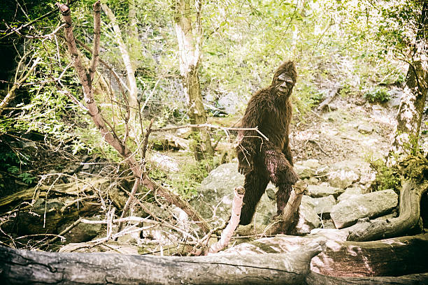

Go to the top
The "legend" of Bigfoot has existed for centuries. Across America, there are hundreds of sightings per year and around the world similar legends exist under different names such as Sasquatch, Yeti, and Wildman. In recent years, many have worked to find proof of Bigfoot’s existence. One man, Roger Patterson, caught the following video of an alleged Bigfoot on camera in 1967:
While many believe this video to be a work of fiction, some have turned to a very real, in depth study of the creature through Cryptozoology.
Nonfiction Books on the Modern History of Bigfoot
-
The Secret History of Bigfoot - By John O'Connor
- Follows journalist John O'Connor on his quest to discover Bigfoot.
- Digs into the real world of Cryptozoology.
- Located in the Pacific Northwest.
-
In the Valleys of the Noble Beyond - By John Zada
- Travels to British Columbia to learn of the rainforest Sasquatch.
- Interviews scientists, First Nations, and local tour guides.
-
Bigfoot!: The True Story of Apes in America - By Loren Coleman
- Looks at history of Bigfoot in America.
- Explores the theory that Bigfoot is a descendant of apes like humans.
-
The Sasquatch in Minnesota - By Mike Quast
- Written by a man who saw Bigfoot himself.
- Compiles many records of ordinary and bizarre Bigfoot encounters from Minnesota and the Dakotas.
Go to the top